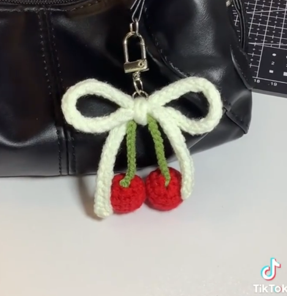

Inicio
Categoria
Proyectos Destacados
Sobre Nosotros
Login
Explora por Categoría
Encuentra el tipo de manualidad que más te gusta
Papel y Cartón
Ver proyectos
Pintura
Ver proyectos

Costura y Tejido
Ver proyectos